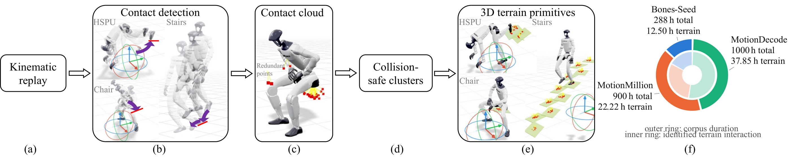

01
Box liftingObject interaction
Lifting a box
Ours lifts and holds the box while SONIC loses a stable grasp.
Full system
InterTrack models what the robot can do next while it acts, enabling environment interaction and extreme robustness in a single whole-body controller.
Head-to-head
Matched hardware trials: SONIC is shown on the left and ours on the right, driven simultaneously by the same live command.
Ours lifts and holds the box while SONIC loses a stable grasp.
Ours rises while holding a 2 kg fire extinguisher; SONIC falls during the ascent.
Ours climbs onto the platform and stabilizes; SONIC fails to complete the ascent.
Ours loads the box as a seat; SONIC remains in a half-squat without stable support.
Capability 01
The controller turns seats and platforms into load-bearing support while coordinating balance with carried objects.
The robot lowers onto a real chair and uses the seat as load-bearing support under live whole-body command.
While holding a large black case, the robot steps onto the platform and stabilizes without dropping it.
The robot climbs while carrying a cardboard box, adapting its balance to both the payload and the platform contact.
Capability 02
When a command is implausible in the current environment, the policy produces a stable best-effort response while retaining achievable intent.
The same sitting command resolves to a stable squat.
With the expected platform absent, the policy settles into a stable best-effort motion.
The same tracking policy stands up and resumes tracking after a kick-induced fall.
In simulation, filtering suppresses the destabilizing kick while retaining the commanded turn.
Motion range
One command interface across flexibility, control, and explosive dynamics.
Positioning
Prior methods cover pieces of the problem. InterTrack brings them together.
| Method | Diverse whole-body tracking | Low-latency teleoperation | Terrain interaction | Object interaction | Robust to implausible commands | Robust to falls |
|---|---|---|---|---|---|---|
| GMT | ✓ | ✕ | ✕ | ✕ | ✕ | ✕ |
| SONIC | ✓ | ✓ | ✕ | ✕ | ✕ | ✕ |
| Humanoid-GPT | ✓ | ✓ | ✕ | ✓ | ✕ | ✕ |
| PHP | ✕ | ✕ | ✓ | ✕ | ✕ | ✕ |
| OmniRetarget | ✕ | ✕ | ✓ | ✓ | ✕ | ✕ |
| CMP | ✓ | ✓ | ✕ | ✓ | ✓ | ✕ |
| BFM-Zero | ✓ | ✓ | ✕ | ✕ | ✕ | ✓ |
| SceneBot | ✓ | ✕ | ✓ | ✓ | ✕ | ✕ |
| Perceptive BFM | ✓ | ✕‡ | ✓ | ✕ | ✕ | ✓ |
| PGMT | ✓ | ✕† | ✓ | ✕ | ✕ | ✓ |
| InterTrack (ours) | ✓ | ✓ | ✓ | ✓ | ✓ | ✓ |
†PGMT’s demo shows over 1 s of teleoperation delay, exceeding the low-latency criterion. ‡Perceptive BFM’s 21-frame future window implies a look-ahead delay of at least 0.4 s at 50 Hz.
Core results
Best values are highlighted. All results are sim-to-sim in MuJoCo, using the official baseline checkpoints and the complete InterTrack controller with safety radius 3.
| Method | Standard | Terrain | Implausible | Fall | ||||||
|---|---|---|---|---|---|---|---|---|---|---|
| MPKPE↓ | RootVel↓ | SR↑ | MPKPE↓ | RootPos↓ | SR↑ | MPKPE↓ | SR↑ | SR↑ | Jerk↓ | |
| SONIC | 82.3 | 189.6 | 94.1 | 331.2 | 294.7 | 15.3 | 327.6 | 50.0 | 5.9 | 1295.5 |
| HoloMotion-1 | 109.4 | 121.3 | 89.0 | 330.0 | 280.7 | 18.7 | 248.7 | 67.6 | 0.7 | 2000.0 |
| Humanoid-GPT | 90.9 | 205.8 | 91.9 | 283.3 | 326.7 | 14.0 | 208.0 | 70.6 | 2.9 | 3598.1 |
| InterTrack (ours) | 76.6 | 211.1 | 96.3 | 93.3 | 100.7 | 81.3 | 158.0 | 83.1 | 99.3 | 1050.6 |
Position errors are in mm, RootVel in mm/s, Jerk in rad/s3, and SR in %. Fall SR is the recovery rate: standing up and resuming tracking. All other SR columns treat a fall as failure. Each method is rolled out to the end of every reference, including failed trials.
Method overview
A causal Transformer jointly predicts action, next proprioceptive state, and the distribution of the next latent behavior command. At deployment, the preceding behavior distribution identifies and corrects implausible commands from physical history.
The controller infers contact-conditioned dynamics from proprioceptive history, without scene observations or privileged contact labels. Hardware deployment runs at 50 Hz with a 0.2 s look-ahead buffer for ten future reference frames.
Data pipeline
Contact evidence in retargeted motion is recovered as full 3D, simulator-ready geometry: stairs, seats, boxes, tables, and other supports.

Abstract
General-purpose motion trackers enable humanoid robots to follow diverse whole-body motions while maintaining balance, but are trained only on flat ground, failing to exploit bipedal mobility over complex terrain. Cross-terrain controllers, meanwhile, are task-specific or accept only low-dimensional locomotion commands. We introduce InterTrack, the first behavior world model (BWM) for robust whole-body tracking with environment interaction. Its Transformer jointly predicts the next action, state, and behavior distribution, learning environment-conditioned dynamics. To scale interaction training data, an automatic annotation pipeline reconstructs 3D support geometry from retargeted motions. At deployment, the policy handles commands implausible in the current environment in a “best-effort” manner. Quantitatively, InterTrack achieves an 81.3% success rate on terrain interaction (4.3× the best evaluated baseline) and a 99.3% fall-recovery rate, while also improving free-space tracking and outperforming three leading tracking baselines across all of these regimes. To our knowledge, we provide the first demonstration of real-time cross-terrain whole-body teleoperation on a humanoid robot, alongside object interaction, stable responses to missing supports, and robust recovery from falls.
Explore more
Loading details…